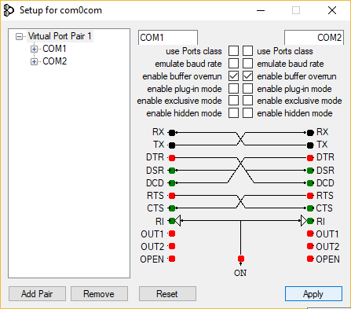

6.1 Com0com Installation and Configuration(Windows)
Download the signed version of com0com.
Unzip the downloaded .zip file and run the specific installer of your operating system, x86 for windows 32-bit or x64 for windows 64-bit.
Configure the “choose components” window as the figure below:

In the last configuration window, check the “Launch setup” option:

In the setup window, change the port names to COM1, COM2, COM3 .... Just check the “enable buffer overrun” option on the two ports, click in the “Apply” button and close the setup. In the configuration shown in the figure below, the COM1 and COM2 ports form a NULL-MODEM connection, where one port must be used by the PICSimLab and another by the application with serial communication.
